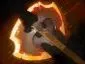
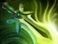
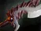

Blade Fury
Вращаясь, наносит урон врагам поблизости и помогает Джаггернауту противостоять многим заклинаниям.

Керри — позиция 1
Стабильно добивай крипов и используй способности с пользой. Blade Fury может помочь нанести урон или выйти из опасности. Применяй Healing Ward после сражений и во время продвижения команды. Выбирай момент для Omnislash, когда союзникам врага сложно защитить цель. В поздней игре участвуй в боях и помогай атаковать башни.
Чередуй линии и нейтральные лагеря. Используй Blade Fury для зачистки крипов, когда это эффективно, но береги ману, если она понадобится для драки.
Вращаясь, наносит урон врагам поблизости и помогает Джаггернауту противостоять многим заклинаниям.
Призывает тотем, который восстанавливает здоровье союзникам рядом с ним.
Даёт атакам шанс нанести критический урон.
Позволяет быстро атаковать выбранных врагов серией ударов.





